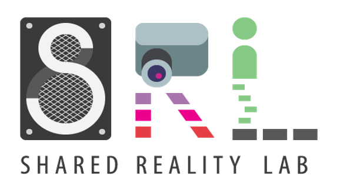
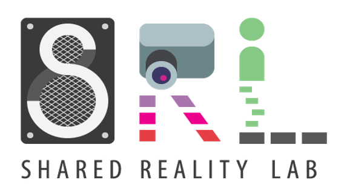
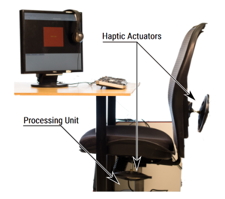
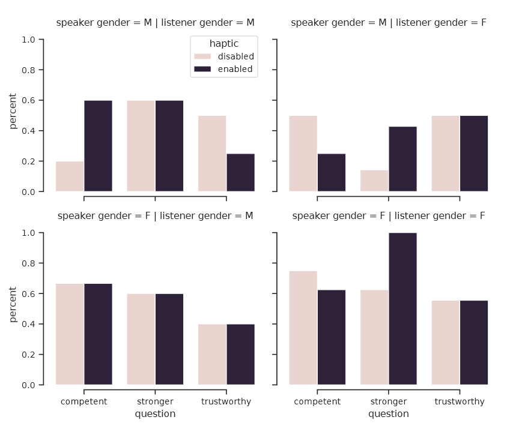

Haptic Augmentation of Audio and its Effects on Speech Perception
A. Weill–Duflos, P. Fortin, F. Al Taha, J. R. Cooperstock
 

Context
-
Voice characteristics influence perception of speaker’s professional abilities
-
Voice pitch is one of the factor
Setup
- Chair with 100W tactile loudspeaker
- TTS voices from Google Wavenet models
Experiment
I urge you to vote for me this November
- pair of voices
Results
Choice of high-pitched voices: 
Conclusion
- did not replicate previous findings